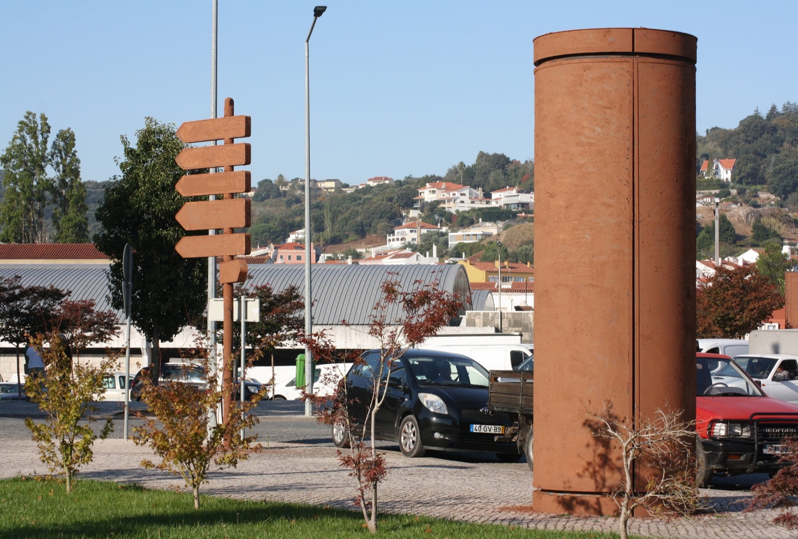
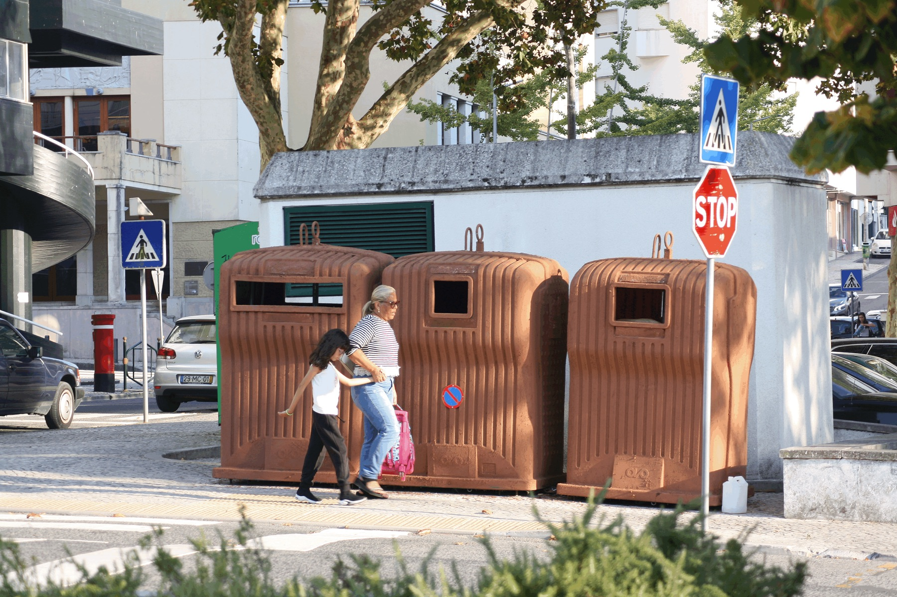
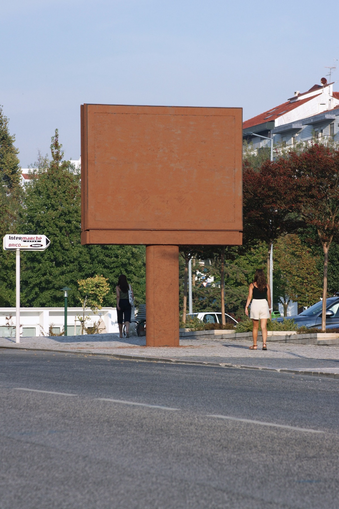
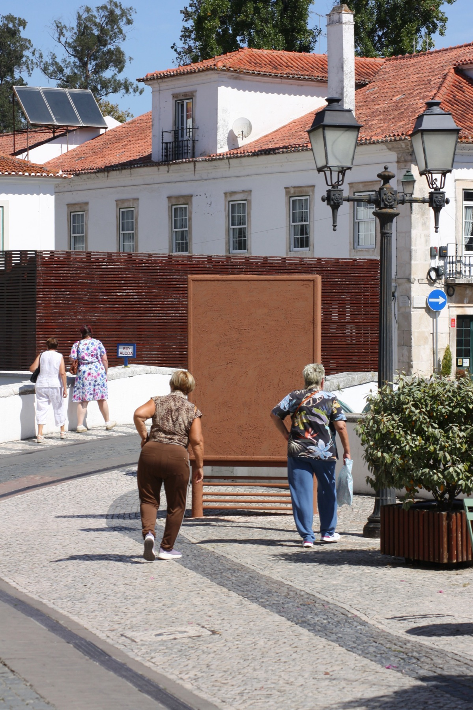
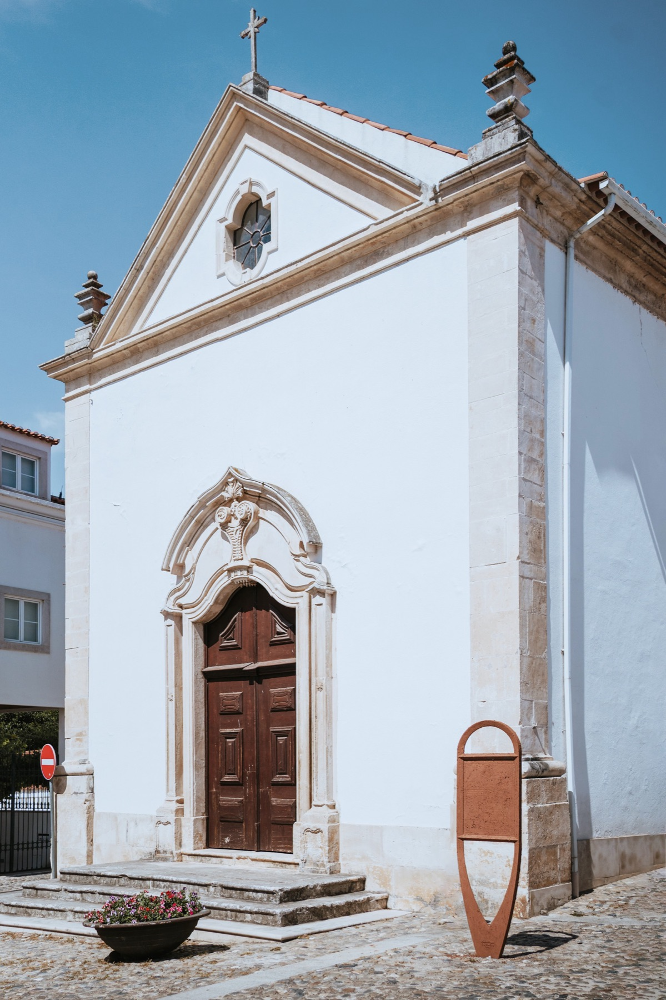
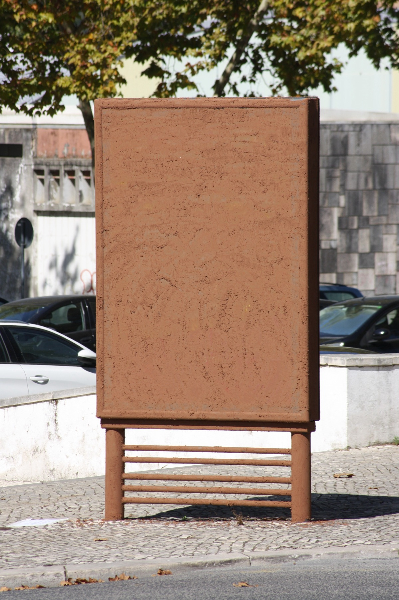

Obra2024
O barro esfrega o barro

A propósito del Congreso 2024 de la Academia Internacional de Cerámica (AIC), propusimos utilizar la arcilla salvaje para intervenir diferentes elementos del casco urbano de Alcobaça. El objetivo era transformar objetos urbanos comunes que han sido completamente asimilados, como los paneles informativos, publicitarios y los contenedores de basura.
Al perder su función informativa, estas piezas mudas cuestionan lo que esconden, y se nos muestran como esculturas y monumentos contemporáneos.
- Materiales
- Arcilla salvaje km casi 0
- Mobiliario urbano propiedad del Ayuntamiento de Alcobaça
- Agradecimientos
- Ani, Nina, Nitish, João




